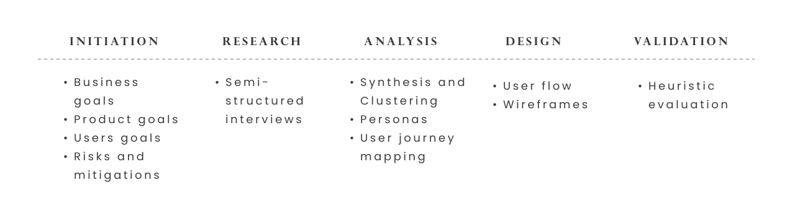

CASE STUDY
2021
ABOUT
Jointly is a fictitious mobile app for group physical exercise that allows the user to join an existing group or create a new one.
CONTEXT
This project was the hands-on section of my Computer Science undergraduate thesis whose theme consists of usability in user experience design.
RESPONSABILITIES
- UX Research
- UX Design
- Usability Engineering
THE PROCESS
PROJECT BACKGROUND
This idea was born from self-analysis in a specific moment of self-sabotage related to the practice of physical exercises. I have always liked to run on the beach and I do it often, but there are certain times that other activities seem more important, or even the old laziness hits and then I suspend the run that day.
However, in the past, when I had the company of friends to go to the gym or jog somewhere, I felt more stimulated and was more committed. With their encouragement I kept myself consistent and lost 15kg. Physical activities performed with company are more fun and easier to accomplish.
Given this context, Jointly is an application that enables you to exercise with a group of people who share the same interest as you. This engagement will generate a cycle of motivation: You will be motivated and you will motivate your colleagues.
PRODUCT GOALS
To build an experience that facilitates and encourages group physical exercises in a customized and fun way, making it part of the users' lifestyle.
BUSINESS GOALS
Build a new market from the development of a new mobile application, attracting and building user loyalty. Generate revenue through partnerships with sports centers and increase the number of users of premium modality.
RISKS AND MITIGATIONS
Possible risks
• There are no groups for the user to join and he does not feel confident creating a group to lead.
• Users only use the app to find activity groups and once the group is known, the app is abandoned.
• Users only use the free mode (with advertisements)
• Lack of security at meetings, especially for women
Possible mitigations
• Dissemination of the app to formal exercise groups in the city.
• Lead user can be “rewarded” by creating a group
• The app can provide services that “hold” the user (allow posting training progress, photos, videos, etc.)
• Suggestion of meeting point in public and busy places. Easily share information and location with family members.
TARGET AUDIENCE
The target audience consists of adult men and women who want to build healthy habits, people who have difficulty maintaining consistency in exercise and group physical activity practitioners such as runners and cyclists.